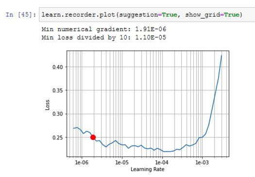

Deep Learning on imagery using `fastai.vision` module
List of relevant functions and classes¶
Getting sample data¶
-
fastai.datasetscontains a set of curated datasets that sits on S3. You can get the list fromfastai.datasets.URLs -
URLs.PETSfor example will return the download URL. -
fastai.datasets.untar_data()will download to a.fastai/datafolder under local user data and will return that path as aPathlib.Pathobject
Loading image data¶
-
fastai.vision.data.get_image_files()will scan a directory of image files and return a list ofPathobjects. - The next step is to create an
ImageDataBunchinstance. In FastAI,DataBunchobjects form the main way to represent and hold training and test datasets. -
fastai.vision.data.ImageDataBunch.from_name_re()is a static, factory method allows you to construct anImageDataBunchand while doing that, it can extract labels from file names. It accepts a Python Regular Expression syntax for this. You also feed it with transformations, size to resize and batch size the GPU can handle. See example below:
pat = r'/([^/]+)_\d+.jpg$' data = ImageDataBunch.from_name_re(path_img, fnames, pat, ds_tfms=get_transforms(), size=224, bs=bs) data = data.normalize(imagenet_stats)
-
fastai.vision.transform.get_transforms()is a utility func that is used to specify and get back a list of transformation that need to applied on the DataBunch object. - The
from_name_re()will split the data into training and validation sets. These can be accessed viadata.valid_dsanddata.train_dswhere,datais instance ofImageDataBunch. -
data.show_batch()can be used to display training data in a notebook. -
data.classeswill return the label classes it has parsed using the regular expression earlier. -
data.batch_sizeshows the batch size configured
Different ways of loading data into DataBunch objects¶
-
data = ImageDataBunch.from_folder(path, ds_tfms, size)can create it from folder, sub-folder structure -
data = ImageDataBunch.from_csv(path, ds_tfms, size)can load it from a CSV containing file names and class values -
data = ImageDataBunch.from_df(path, df, ds_tfms, size)can load data from a df -
data = ImageDataBunch.from_name_func(path, fn_paths, ds_tfms, size, label_func= lambda x:'3' if '/3/' in str(x) else '7')to create from an anonymous function -
data = ImageDataBunch.from_lists(path, fn_paths, labels, ds_tfms, size)to create from a list of class values.
Training¶
-
fastai.vision.modelsmodule can list all models that are supported. For instance,[mdl for mdl in dir(fastai.vision.models) if '__' not in mdl]list comp will return40such models as of 2021.
from pprint import pprint pprint([mdl for mdl in dir(fastai.vision.models) if '__' not in mdl], compact=True) >>> ['BasicBlock', 'Darknet', 'DynamicUnet', 'ResLayer', 'ResNet', 'SqueezeNet', 'UnetBlock', 'WideResNet', 'XResNet', 'alexnet', 'darknet', 'densenet121', 'densenet161', 'densenet169', 'densenet201', 'mobilenet_v2', 'resnet101', 'resnet152', 'resnet18', 'resnet34', 'resnet50', 'squeezenet1_0', 'squeezenet1_1', 'unet', 'vgg11_bn', 'vgg13_bn', 'vgg16_bn', 'vgg19_bn', 'wrn', 'wrn_22', 'xception', 'xresnet', 'xresnet101', 'xresnet152', 'xresnet18', 'xresnet18_deep', 'xresnet34', 'xresnet34_deep', 'xresnet50', 'xresnet50_deep'] 40
-
fastai.metrics.error_rate()is a type of loss function, we use in training on images -
fastai.vision.learner.cnn_learner()is a static, factory method that creates a convolutional neural network based on the backbone and loss function specified. For instance,learn = cnn_learner(data, models.resnet34, metrics=error_rate).- Note, when creating the learner, you pass the whole data bunch - including both training and test data.
- The
error_ratefunction will help in evaluating the performance on both the training data as well as the validation data.
-
learn.fit_one_cycle(cyc_len=4)is used to train therestnet34model. The cycle length parameter determines how many times to repeat the one cycle learning. The output of this cell shows the following:
epoch train_loss valid_loss error_rate time 0 1.361700 0.337071 0.104195 02:24 1 0.601790 0.297722 0.089310 02:07 2 0.380089 0.282888 0.079838 02:26 3 0.271350 0.246164 0.071719 02:07 Wall time: 9min 6s
- The output above shows at end of epoch 4, we have an error rate of
0.071which means about92.9%accuracy. - Calling
learn.summary()returns you a high level info on each of the layers in the DL model along with summary info at the end. - Finally, save the model by calling
learn.save(file='pets-lesson01-stage1', return_path=True)which will return the path to the model file on disk, such as:PosixPath('/Users/atma6951/.fastai/data/oxford-iiit-pet/images/models/pets-lesson01-stage-1.pth)and weighs about90 MBin size. By default, Fastai tries to keep the models in the same location as the data bunch.
Model accuracy¶
Once training is complete, you can use the following tools to evaluate the accuracy.
- Use
interp = fastai.train.ClassificationInterpretation.from_learner(learn)to create an instance ofClassificationInterpretationclass. Running this takes a while as fastai will compute the accuracy of each of the result in the validation dataset. -
interp.top_losses()will return a tuple of losses and indices which correspond to loss value and index of that dataset in thedata.valid_dsbunch. Since the function sorts the data by descending loss value, it supplies the index to match with original dataset. -
interp.plot_top_losses(k=9, figsize=(7,7))will plot the top losses in a matrix along with thepredicted / actual / loss / probabilityvalues as annotations. -
interp.plot_confusion_matrix(figsize=(16,16))will plot the seaborn style confusion matrix with heatmap. For a37class problem like the pets, this matrix gets hard to read. When num classes is high and accuracy is also generally high, use, -
interp.most_confused(min_val=2)will return a list of tuples - containingprediction, actual, num_confusions. Themin_val=2tells the API to ignore cases where just1file is misclassified. It is essentially, the descending order of non-diagonal cells in the confusion matrix.
Model fine-tuning¶
So far, the fit_one_cycle() method was used on 4 epochs and the training went fairly quickly (10 mins). This is because, the cnn_learner() produced a model that is based on resnet32 and added a few layers to the end. The fit_one_cycle() trained only those last few layers and left most of the earlier ones intact.
This (transfer learning) principle works fairly well and gets us about 92% accuracy. To improve this further, we need to unfreeze all the layers in the models and adjust their weights during the training.
-
learn.unfreeze()will unfreeze the whole model - backbone and the additional layers -
learn.fit_one_cycle(1)thereafter will try to teach / change weights on the whole model. Often this results in lower accuracy because the initial layers of the model need not be changed as much since they often do preliminary work compared to the later layers which do the actual classification.
To resolve the lower accuracy issue, we need to introduce learning rate and modify the weights of the initial layers much less frequently than those of the later layers. Learning rate is usually specified as a list of floats to match each layer in the model. In Fastai, we use the slice(low, high) Python function to evenly distribute LR between the first and last layers of the model.
- Run
learn.lr_find()where the API will evaluate various learning rates and find the loss for each. - Run
learn.recorder.plot(suggestion=True, show_grid=True)to view the learning rate plot. It looks like below:

In general, we are not looking for learning at lowest loss, but for rate at the steepest segment of the loss curve. Using this suggestion, you can run
%%time learn.unfreeze() learn.fit_one_cycle(2, max_lr=slice(1e-6,1e-5)) # LR chosen from the suggestion in the image >>> epoch train_loss valid_loss error_rate time 0 0.230512 0.231129 0.067659 02:13 1 0.246171 0.228836 0.064276 02:15 Wall time: 4min 28s
With an additional 4.5 minutes, we improved the accuracy to 93%. You can then save that model as learn.save('pets-lesson01-stage-2', return_path=True) for later.
Predict on real world data¶
To predict on any given image, use the fastai.vision.image.open_image() function to load an image. You get back an fastai.vision.image.Image object that can be passed to learn.predict() function.
The prediction is a tuple of (Category, category index, probabilities for each class).
Hyper-parameter tuning¶
Learning rate too high¶
When the rate it too high, the validation loss gets obscenely high - like an impossible number. The default max_lr is 0.003.
Learning rate too low¶
When the rate is too small, the model’s validation drops, but very very slowly. The command learn.recorder.plot_losses() will plot the validation and training loss for visual interpretation. You can bump the rate by a factor of 10 or 100 and try again.
Training loss > Validation loss¶
When a model is properly trained, the training loss is typically lower than validation loss. If the training loss is greater, it means the model is not trained enough - try increasing number of epochs or increase the learning rate.
Too few epochs¶
Too few epochs and too low LR look alike. For instance when you train for just 1 epoch, the training loss might be greater than validation loss. Or, the difference between training and validation might be too high. Try increasing epochs or the LR.
Too many epochs¶
Too many epochs is too much training and can lead to overfitting. However, it is quite difficult to overfit in deep learning in practice. A sign of overfitting is when the model error starts increasing after a few epochs.